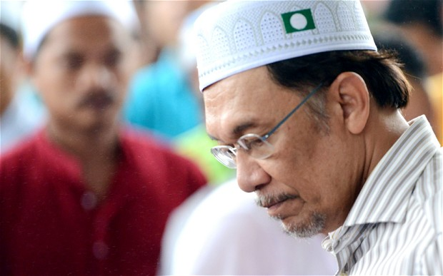

Blindtext
Malaysia election: Anwar Ibrahim, the opposition leader facing the pinnacle of his career
After a long and unpredictable career spanning more than 30 years, Anwar Ibrahim will face the biggest moment of his political life on Sunday. (SEE ORIGINAL)

Something of a contradiction in Malaysian politics, Anwar Ibrahim started out as a radical Islamic leader organising mass protests during his student days, but defied all expectations by deciding to join the ruling Barisan Nasional government in 1982.
Then under the tutelage of the authoritarian-minded Dr Mahathir Mohamad, his government was well known at the time for its repressive tactics against any form of popular dissent.
A skilful politician possessing a natural ability for speechmaking, Mr Anwar swiftly rose up the ranks of Barisan Nasional, becoming Dr Mahathir’s deputy in 1993. But later he miscalculated the power of his popularity among ordinary Malaysians and came out publicly against the ruling party for its endemic bribery and corruption.
Dr Mahathir quickly turned against his former protégé, indicting and imprisoning him on corruption and sodomy charges, deliberately designed to smear Mr Anwar in what is a deeply conservative Muslim society.
Subsequently he was released from jail and partly acquitted of all charges in 2004.
So far Mr Anwar has fared well in the run-up to Sunday’s election, managing to unite a number of disparate political groupings under his leadership including a Malay Islamic party, a secular Chinese party and his own multi-ethnic party.
Nevertheless, he faces a steep challenge in overturning Barisan Nasional’s 56 year reign, one of the world’s longest-serving regimes despite Malaysia’s official status as a constitutional monarchy.
Widely loved by the public for his ability to relate to ordinary people and capture their imagination through his oratory prowess, Mr Anwar says he will retire from politics and retreat to career in academia if he does not win power on Sunday.
“I will try my best. I am confident we will win. But if not, I will step down,” he said.